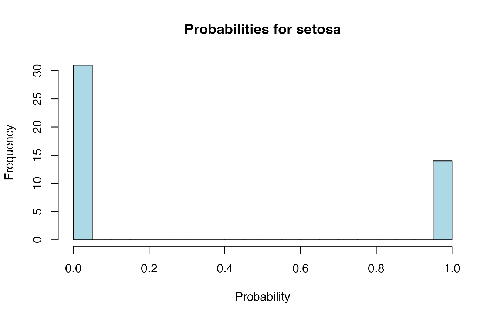
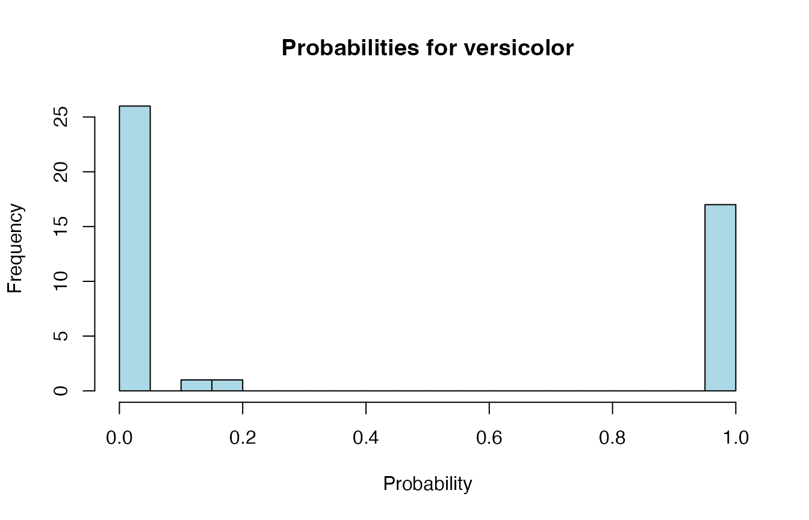
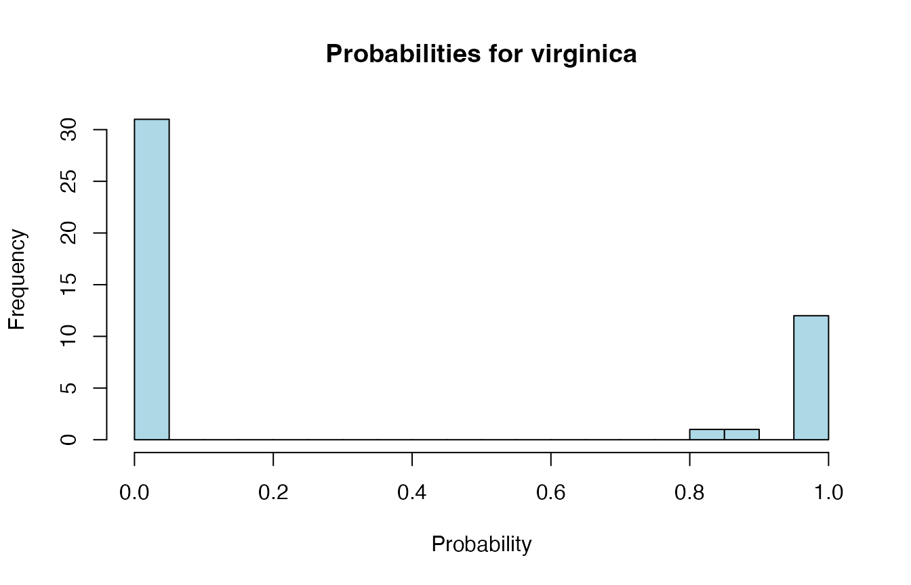

mlS3 –
with caretmlS3-wrap_caret-vignette.RmdModel parameters available for caret: https://topepo.github.io/caret/available-models.html
# Load required libraries
library(mlS3)
library(caret) # Will be suggested, but needed for this example## Loading required package: ggplot2## Loading required package: lattice
# ============================================================================
# Regression with mtcars dataset
# ============================================================================
data(mtcars)
# Prepare data
X_reg <- mtcars[, -1] # All except mpg
y_reg <- mtcars$mpg # Target variable
# Split into train/test
set.seed(123)
idx_reg <- sample(nrow(X_reg), 0.7 * nrow(X_reg))
X_reg_train <- X_reg[idx_reg, ]
y_reg_train <- y_reg[idx_reg]
X_reg_test <- X_reg[-idx_reg, ]
y_reg_test <- y_reg[-idx_reg]
# ----------------------------------------------------------------------------
# Example 1: Random Forest with specific parameters
# ----------------------------------------------------------------------------
cat("\n=== Example 1: Random Forest Regression ===\n")##
## === Example 1: Random Forest Regression ===
mod_rf <- wrap_caret(X_reg_train, y_reg_train,
method = "rf",
mtry = 3) # Number of variables sampled at each split
print(mod_rf)## $model
## Random Forest
##
## 22 samples
## 10 predictors
##
## No pre-processing
## Resampling: None
##
## $task
## [1] "regression"
##
## $method
## [1] "rf"
##
## $parameters
## $parameters$mtry
## [1] 3
##
##
## attr(,"class")
## [1] "wrap_caret"
# Predictions
pred_rf <- predict(mod_rf, newx = X_reg_test)
rmse_rf <- sqrt(mean((pred_rf - y_reg_test)^2))
r2_rf <- 1 - sum((y_reg_test - pred_rf)^2) / sum((y_reg_test - mean(y_reg_test))^2)
cat("RMSE:", round(rmse_rf, 3), "\n")## RMSE: 2.007## R-squared: 0.681
# ----------------------------------------------------------------------------
# Example 3: Support Vector Machine
# ----------------------------------------------------------------------------
cat("\n=== Example 3: SVM Regression ===\n")##
## === Example 3: SVM Regression ===
mod_svm <- wrap_caret(X_reg_train, y_reg_train,
method = "svmRadial",
sigma = 0.1,
C = 1)
print(mod_svm)## $model
## Support Vector Machines with Radial Basis Function Kernel
##
## 22 samples
## 10 predictors
##
## No pre-processing
## Resampling: None
##
## $task
## [1] "regression"
##
## $method
## [1] "svmRadial"
##
## $parameters
## $parameters$sigma
## [1] 0.1
##
## $parameters$C
## [1] 1
##
##
## attr(,"class")
## [1] "wrap_caret"
pred_svm <- predict(mod_svm, newx = X_reg_test)
rmse_svm <- sqrt(mean((pred_svm - y_reg_test)^2))
r2_svm <- 1 - sum((y_reg_test - pred_svm)^2) / sum((y_reg_test - mean(y_reg_test))^2)
cat("RMSE:", round(rmse_svm, 3), "\n")## RMSE: 2.276## R-squared: 0.589
# ----------------------------------------------------------------------------
# Example 4: Neural Network
# ----------------------------------------------------------------------------
cat("\n=== Example 4: Neural Network Regression ===\n")##
## === Example 4: Neural Network Regression ===
mod_nnet <- wrap_caret(X_reg_train, y_reg_train,
method = "nnet",
size = 5, # Number of hidden units
decay = 0.01) # Weight decay## # weights: 61
## initial value 10205.859210
## iter 10 value 9790.376730
## iter 20 value 9786.573309
## iter 30 value 9786.169039
## final value 9786.156860
## converged
print(mod_nnet)## $model
## Neural Network
##
## 22 samples
## 10 predictors
##
## No pre-processing
## Resampling: None
##
## $task
## [1] "regression"
##
## $method
## [1] "nnet"
##
## $parameters
## $parameters$size
## [1] 5
##
## $parameters$decay
## [1] 0.01
##
##
## attr(,"class")
## [1] "wrap_caret"
pred_nnet <- predict(mod_nnet, newx = X_reg_test)
rmse_nnet <- sqrt(mean((pred_nnet - y_reg_test)^2))
r2_nnet <- 1 - sum((y_reg_test - pred_nnet)^2) / sum((y_reg_test - mean(y_reg_test))^2)
cat("RMSE:", round(rmse_nnet, 3), "\n")## RMSE: 17.328## R-squared: -22.803
# ----------------------------------------------------------------------------
# Example 5: Compare all models
# ----------------------------------------------------------------------------
cat("\n=== Model Comparison ===\n")##
## === Model Comparison ===
results_reg <- data.frame(
Model = c("Random Forest", "SVM", "Neural Network"),
RMSE = round(c(rmse_rf, rmse_svm, rmse_nnet), 3),
R2 = round(c(r2_rf, r2_svm, r2_nnet), 3)
)
print(results_reg)## Model RMSE R2
## 1 Random Forest 2.007 0.681
## 2 SVM 2.276 0.589
## 3 Neural Network 17.328 -22.803
# Best model
best_idx <- which.min(results_reg$RMSE)
cat("\nBest model (lowest RMSE):", results_reg$Model[best_idx], "\n")##
## Best model (lowest RMSE): Random Forest
# ============================================================================
# Classification with iris dataset
# ============================================================================
data(iris)
# ----------------------------------------------------------------------------
# Example 1: Binary Classification (setosa vs versicolor)
# ----------------------------------------------------------------------------
cat("\n=== Example 1: Binary Classification ===\n")##
## === Example 1: Binary Classification ===
iris_bin <- iris[iris$Species != "virginica", ]
X_bin <- iris_bin[, 1:4]
y_bin <- droplevels(iris_bin$Species)
# Split
set.seed(123)
idx_bin <- sample(nrow(X_bin), 0.7 * nrow(X_bin))
X_bin_train <- X_bin[idx_bin, ]
y_bin_train <- y_bin[idx_bin]
X_bin_test <- X_bin[-idx_bin, ]
y_bin_test <- y_bin[-idx_bin]
# Random Forest
mod_rf_bin <- wrap_caret(X_bin_train, y_bin_train,
method = "rf",
mtry = 2)
print(mod_rf_bin)## $model
## Random Forest
##
## 70 samples
## 4 predictor
## 2 classes: 'setosa', 'versicolor'
##
## No pre-processing
## Resampling: None
##
## $task
## [1] "classification"
##
## $method
## [1] "rf"
##
## $parameters
## $parameters$mtry
## [1] 2
##
##
## attr(,"class")
## [1] "wrap_caret"
# Class predictions
pred_rf_bin <- predict(mod_rf_bin, newx = X_bin_test, type = "class")
acc_rf <- mean(pred_rf_bin == y_bin_test)
# Probability predictions
prob_rf_bin <- predict(mod_rf_bin, newx = X_bin_test, type = "prob")
head(prob_rf_bin)## setosa versicolor
## 1 1.000 0.000
## 2 0.984 0.016
## 3 1.000 0.000
## 10 0.990 0.010
## 11 1.000 0.000
## 19 0.992 0.008## Accuracy: 1
cat("Confusion Matrix:\n")## Confusion Matrix:## Actual
## Predicted setosa versicolor
## setosa 15 0
## versicolor 0 15
# ----------------------------------------------------------------------------
# Example 2: Multiclass Classification (all species)
# ----------------------------------------------------------------------------
cat("\n=== Example 2: Multiclass Classification ===\n")##
## === Example 2: Multiclass Classification ===
X_multi <- iris[, 1:4]
y_multi <- iris$Species
# Split
set.seed(123)
idx_multi <- sample(nrow(X_multi), 0.7 * nrow(X_multi))
X_multi_train <- X_multi[idx_multi, ]
y_multi_train <- y_multi[idx_multi]
X_multi_test <- X_multi[-idx_multi, ]
y_multi_test <- y_multi[-idx_multi]
# Random Forest
mod_rf_multi <- wrap_caret(X_multi_train, y_multi_train,
method = "rf",
mtry = 2)
pred_rf_multi <- predict(mod_rf_multi, newx = X_multi_test, type = "class")
acc_rf_multi <- mean(pred_rf_multi == y_multi_test)
cat("Random Forest Accuracy:", round(acc_rf_multi, 4), "\n")## Random Forest Accuracy: 0.9778
# ----------------------------------------------------------------------------
# Example 3: Support Vector Machine (multiclass)
# ----------------------------------------------------------------------------
cat("\n=== Example 3: SVM Multiclass ===\n")##
## === Example 3: SVM Multiclass ===
mod_svm_multi <- wrap_caret(X_multi_train, y_multi_train,
method = "svmRadial",
sigma = 0.1,
C = 10)
pred_svm_multi <- predict(mod_svm_multi, newx = X_multi_test, type = "class")
acc_svm_multi <- mean(pred_svm_multi == y_multi_test)
cat("SVM Accuracy:", round(acc_svm_multi, 4), "\n")## SVM Accuracy: 0.9778
# Confusion Matrix
cat("\nSVM Confusion Matrix:\n")##
## SVM Confusion Matrix:## Actual
## Predicted setosa versicolor virginica
## setosa 14 0 0
## versicolor 0 17 0
## virginica 0 1 13
# ----------------------------------------------------------------------------
# Example 4: K-Nearest Neighbors
# ----------------------------------------------------------------------------
cat("\n=== Example 4: KNN Classification ===\n")##
## === Example 4: KNN Classification ===
mod_knn <- wrap_caret(X_multi_train, y_multi_train,
method = "knn",
k = 5)
pred_knn <- predict(mod_knn, newx = X_multi_test, type = "class")
acc_knn <- mean(pred_knn == y_multi_test)
cat("KNN Accuracy:", round(acc_knn, 4), "\n")## KNN Accuracy: 0.9778
# ----------------------------------------------------------------------------
# Example 5: Linear Discriminant Analysis
# ----------------------------------------------------------------------------
cat("\n=== Example 5: LDA Classification ===\n")##
## === Example 5: LDA Classification ===
mod_lda <- wrap_caret(X_multi_train, y_multi_train,
method = "lda")
pred_lda <- predict(mod_lda, newx = X_multi_test, type = "class")
acc_lda <- mean(pred_lda == y_multi_test)
cat("LDA Accuracy:", round(acc_lda, 4), "\n")## LDA Accuracy: 0.9778
# Get posterior probabilities
prob_lda <- predict(mod_lda, newx = X_multi_test, type = "prob")
cat("\nSample probabilities (first 3 rows):\n")##
## Sample probabilities (first 3 rows):## setosa versicolor virginica
## 1 1 5.524531e-21 3.344613e-39
## 2 1 1.911834e-17 8.536754e-35
## 3 1 9.887659e-19 2.439272e-36
# ----------------------------------------------------------------------------
# Example 7: Compare all classification models
# ----------------------------------------------------------------------------
cat("\n=== Model Comparison (Multiclass) ===\n")##
## === Model Comparison (Multiclass) ===
results_class <- data.frame(
Model = c("Random Forest", "SVM", "KNN", "LDA"),
Accuracy = round(c(acc_rf_multi, acc_svm_multi, acc_knn, acc_lda), 4)
)
print(results_class[order(-results_class$Accuracy), ])## Model Accuracy
## 1 Random Forest 0.9778
## 2 SVM 0.9778
## 3 KNN 0.9778
## 4 LDA 0.9778
# ----------------------------------------------------------------------------
# Example 8: Advanced - Probability calibration check
# ----------------------------------------------------------------------------
cat("\n=== Probability Distributions (LDA) ===\n")##
## === Probability Distributions (LDA) ===
# Get probabilities for all classes
probs <- predict(mod_lda, newx = X_multi_test, type = "prob")
# Show distribution of predicted probabilities for each class
oldpar <- par(mfrow = c(1, 3))
on.exit(par(oldpar))
for (class_name in colnames(probs)) {
hist(probs[, class_name],
main = paste("Probabilities for", class_name),
xlab = "Probability",
col = "lightblue",
breaks = 20)
}

